Events & Seminars
イベント
研究グループの活動記録を保存しています。亀田達也教授の東京大学最終講義はこのページに常時表示し、それ以前のイベントは下部のアーカイブに収納しています。
亀田達也教授 東京大学最終講義・懇親会
2024年3月15日（本郷キャンパス・法文2号館一番大教室 & オンライン／カポ・ペリカーノ）
亀田達也教授の最終講義『実験社会科学としての社会心理学』が行われました。会場の一大に100名、オンラインに250名程の方々が参加されました。当日の記録はこちらです。最終講義録画 最終講義Photo 懇親会Photo
過去のイベント（2023年以前）を表示
東京大学時代を中心とする過去のイベント・セミナー記録です。クリックすると一覧を開閉できます。
Asian Advanced Workshop on Social Decision Making and Collective Intelligence - 2023
2023年12月16 & 17日（NATULUCK 神保町）
社会的意思決定と集合知に関する国際ワークショップを開催しました。韓国、台湾、シンガポール、日本の先端研究者たちが2日間に渡る活発な議論を繰り広げました。プログラムと当日の写真はこちらです。Program Photo
灘校生との対談
2021年4月5日（オンライン）
「灘校 東京合宿」の一環として、灘校生たち（高校・中学）と亀田教授がオンラインで対談しました。2020年度の研究室訪問予定がコロナ禍のために中止、2021年度もオンラインによる実施でしたが、『モラルの起源―実験社会科学からの問い』（岩波新書）を起点に、2時間半にわたり熱心な対談が行われました。
以下は、昨年度の訪問予定を前に、当時中学3年だったK.S.君が事前に論点を整理した文書です。中学生とは思えない達意の文章と明晰な論点整理に、ラボメンバー一同、大きな感銘と刺激を受けました。
私が亀田先生にお話を伺いたいと思った端緒は亀田先生の研究室のホームページにあります。
デール・カーネギーの著作『人を動かす』を読み、社会心理学に興味を持つようになった私は、牛の歩みながら、社会心理学に関する知見の獲得に努めてまいりました。そしてその過程で、亀田先生のホームページを拝見しました。そこには「社会を支える人間本性を脳科学・進化生物学などの経験的知見を用いて考察し、評価する」といった、まさに「越境する知」を体現した研究が存在しており、その手段の新鮮さや実験社会科学という学問の在り方そのものに感銘を受けたのです。
その後、先生の研究内容をより深く知りたいと思い『モラルの起源―実験社会科学からの問い』他数冊を拝読したのですが、これらはいずれも大いに知的興奮を伴う体験であり、大変感激したことを鮮烈に覚えております。そしてもし訪問が叶いましたら、僭越ではございますが、先生のお考えを知るなかで自分なりに生じた
（ⅰ）「適応的視点」の可能性
（ⅱ）優れた集合知を生み出す方法
（ⅲ）社会的利益と個人的利益の関係性
（ⅳ）文理の在り方
という4つの論点を軸にご教授いただきたいと考えております。以下、簡単にではありますが、論点をまとめさせていただきます。
（ⅰ）適応主義のヒトへの適用
人間の社会行動に生き残りのための機能を見出す、所謂適応的視点からの分析が、先生の研究の根底の部分にあったように拝察しました。こういった先生の斬新な分析手段が、社会心理学に関する私の価値観を書き換えたことは言うまでもありません。ただその一方で、幾許かの疑問も覚えました。
それは、進化の途上にあり、自然淘汰による洗練が済みきっていないであろう「ヒト」の行動は、「（真に）適応した」と考えることができるのか、また“種として”ではなく“個人として”行動の自由が与えられている人間の社会において、適応的視点からの分析はどれほど有効であるのか、換言すれば、適応主義の前提である「今存在してる様々な人間の機能は突然変異と自然淘汰を繰り返し、種としてより繁栄するための適応により生まれたものだ」という概念とは相容れぬ部分が人間の社会・行動にはあるのではないか、といったことです。そこで、先生には「人間を分析する上での適応主義の可能性」についてお伺いしたく思います。そして、人間の社会を分析する場面において、もし適応主義が今述べたような弱点を孕んでいるとするならば、適応主義では掬えないような側面を捉えるための補完的な考え方はあるのでしょうか。その点についてもぜひお伺いしたく思います。
（ⅱ）集団意思決定
また、『モラルの起源』第二章に記述されている、「ヒト」と「社会性昆虫」との比較という手法にはただただ度肝を抜かれるとともに、分野の垣根を超えた学問の意義をひしひしと再確認させられました。それと同時に人間の組織の脆さ、危うさを感じたのもまた事実です。人類の歴史において、多元的無知、集団的浅慮などといった現象の影響により、十分な集合知が生まれず、取り返しのつかない失敗に至った例は枚挙にいとまがありません。そしてこの危険性は、後々社会の担い手となるであろう我々もまた同様に孕んでいるものと思われます。では我々が組織として、客観的に最も理にかなった判断を下すために必要なシステムやリスク管理における施策、またその一連の過程での行為がヒトの生存戦略にどのように関連しているのか、先生の見解をお伺いしたいです。
（ⅲ）社会的利益と個人的利益
先生は、社会の多元的無知が起こる背景を、社会の中で生きる人間の利害から分析していらっしゃいます。適応的な視点から同調という社会現象を解析する先生の分析には大変感銘を受けた一方で、社会の中における人間の利害と、適応的視点から見た一人の人間の利害は必ずしも一致しない状況も現実的には存在するように思います。私はこの二つの利害がどのようにリンクするのか、という点について疑問も抱きました。
例えば、日本において伝統的な自害という風習は、社会的な生としての尊厳を守るためのものである一方、「一個体のヒト」としての適応という観点から見ると甚だ非合理にも思えます。そしてこの例は、「社会的な生としての利害」と「一生命体としての利害」が対立する場面において「社会的な生としての利害」が優先されている場合も多く存在することを端的に示している、と捉えることができるように思います。このように考えていくと、人間の行動決定の場合、個人の適応や生存戦略を越えて、社会という観点が時として決定的に重要な意味を有するようにも思えます。
しかしその一方で、社会性昆虫における社会は、血縁関係にある構成員が形成する一つの「家」として形作られているのに対して、ヒトにおける社会では「家」そのものが構成員となっており、血縁という生物学的な紐帯が介在することなく各個人が「社会」という存在を想定しています。その意味においては、社会との関係に対して血縁というシンプルなつながりを見出していないヒトが殊更に「社会的生としての利益」を気にすることはいささか不自然にも思われます。
そこで、一人の人間にとって「社会的生としての利益」と「一生命体としての個人的利益」を考慮することはそれぞれどのような価値を持つのか、そしてまた、この「社会的生としての利益」というあり方が人間の生存というプロセスにおいてどのような意味を持つのかについてもお伺いしたく思います。
また、近代の社会において、我々はますます社会的な存在として捉えられ、個人レベルでの幸せや利害といったものは無視されがちであるように感じます。そのなかで、そもそも社会とは我々にとってどのような存在であるのかという問いは非常に興味をそそられるものであり、今一度検討されるべきものであるように思います。この問いについても是非先生のご意見を伺い、示唆を頂戴できればと考えております。
（ⅳ）現代日本の教育システム
実験内容と並び先生の著書から伝わってきたものがあります。それは、「反知性主義」への嘆き、はたまた「文系再興」への意欲です。今、世間では文系縮小の風潮があり、私自身も「文系は将来の選択肢を狭めることになる」と言った文系軽視の声を度々耳にしております。そんな中で、文系、そして「実験社会科学」という学際性を持った分野の第一人者である先生の目に、日本の教育システムはどのように映っているのか、そしてそれに関してどのような理想をお持ちなのかといったことについて、ご自身がこれまで培ってこられた経験を踏まえて是非ともお伺いしたいです。
お忙しいところとは重々承知の上でのお願いとなりますが、もし訪問させていただけることになれば嬉しい限りです。是非ご検討のほど、よろしくお願い致します。
灘中学校3年 K.S.
NTU-UT Joint Workshop: Experimental Social Sciences
2019年12月21−23日（東京大学本郷キャンパス）
実験社会科学に関する国際ワークショップを開催しました。台湾大学をはじめとするアジアの諸大学からの研究者たちと3日間に渡る活発な議論が行われました。プログラムはこちらをご覧ください。 Link
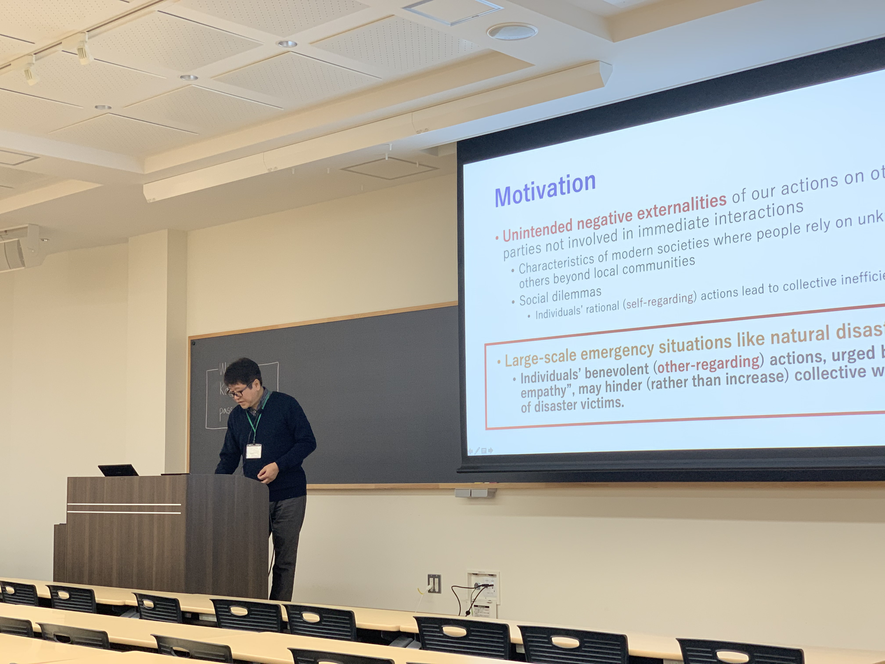 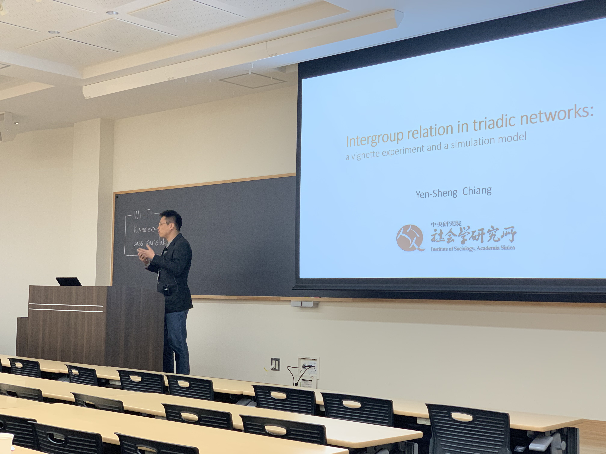 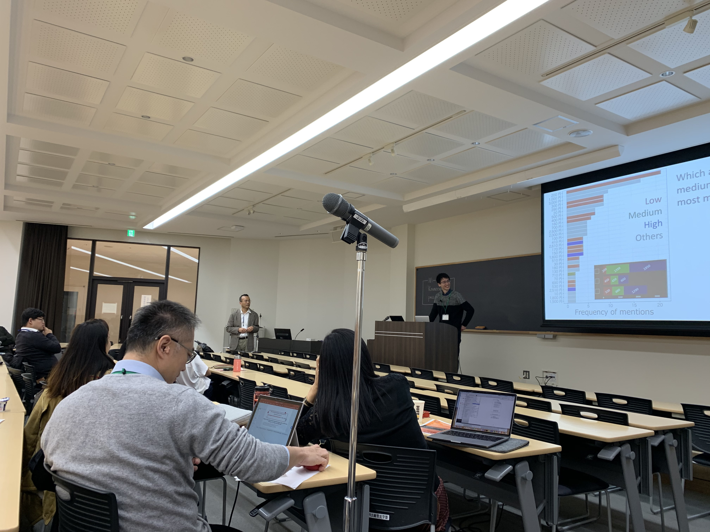 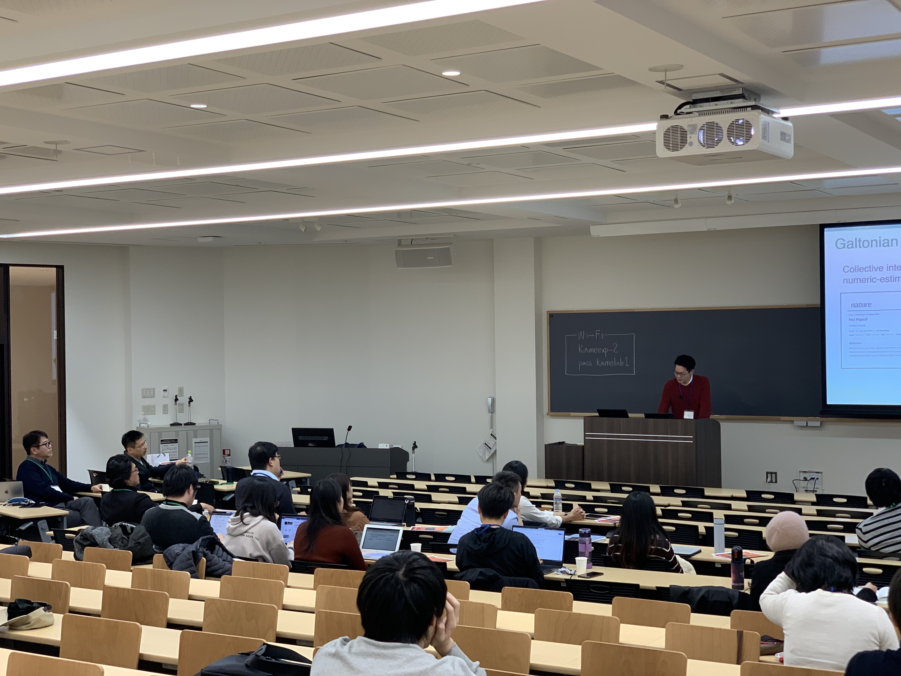
福井大学教育学部附属義務教育学校の中学生が研究室を訪問
2018年3月15日（東京大学本郷キャンパス）
後期課程8年生5名が当研究室を訪れ、どんな研究をしているのか、研究の面白さや意義とは何かなどについて熱心な質疑を行いました。
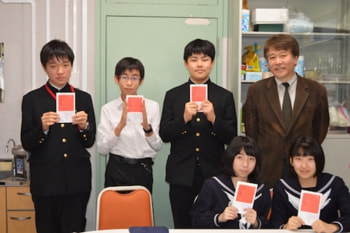
CREST「脳領域／個体／集団間のインタラクション創発原理の解明と適用」キックオフシンポジウム
2018年3月5日（銀座松竹スクエア）
CREST「脳領域／個体／集団間のインタラクション創発原理の解明と適用」キックオフシンポジウムが、銀座松竹スクエアで開催されました。シンポジウムの概要については、下の画像をご覧ください。
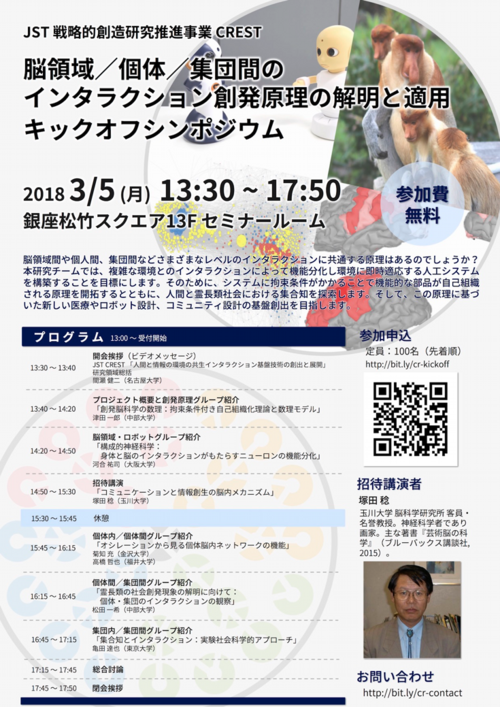
信州大学・西村直子教授セミナー
2018年2月16日（東京大学本郷キャンパス）
信州大学・経済学部の西村直子教授のセミナーが開催されました。
"Schur-Concave Risk Aversion and Multi-agent Risks"
近年，ゲーム的状況に関する行動・実験経済学領域の研究では，自他に生ずる所得を直接評価する社会的選好を視野に入れた分析が盛んにおこなわれるようになってきた。一方，ゲーム中に生じる利得リスクは必然的に，自他の利得の両方を確率的に変動させる。したがって，自己利得のみを視野に入れた数直線上の確率分布でリスクを捉えきれず，自他利得のベクトル上の確率分布として考える必要がある。しかし，自他の利得が変動すると，人々はリスクと同時に自他の利得差も勘案するはずであり，通常のリスク評価測定では，両者が混然となった測定値を得ることになる。
本研究は，Arrow-Prattリスク回避測度を包含するSchur-concavityリスク回避測度に着目して，自他の利得が確率的に変動する際のリスク評価を測定する。異なる事象間における利得代替をベースとするSchur-concave risk aversionの概念に基づき，自他の利得差に対する個人の評価と，利得の確率変動に対する評価を分離する方法を提案する。
University of California San Diego・宮腰誠博士セミナー
2018年2月14日（東京大学本郷キャンパス）
University of California San Diego, Institute for Neural Computationの宮腰誠博士のセミナーが開催されました。
"I see a solution—an EEG scenery a Japanese post-doc saw in UC San Diego"
I will talk about three topics: future, present, and the past of electroencephalogram (EEG) research. In the first part, I will talk about the future of EEG and electrocorticogram (ECoG) studies from the viewpoint of brain-computer interface (BCI) application. I will introduce a concept, tentatively called “Makoto’s pessimism”, by showing my preliminary observation that dimension reduction using principal component analysis (PCA) to keep 95% of data variance produced only 9/256 dimensions for EEG but as many as 78/137 for ECoG. I will raise a fundamental skepticism whether scalp EEG has sufficient degrees of freedom to represent complexity of mind.
In the second part, I will talk about the present of EEG research. I will first briefly introduce an example of the advanced signal processing on EEG including independent component analysis (ICA) and Multivariate Autoregressive (MVAR) modeling. Next, I will discuss the “Vacation of the ground truth” in EEG research as a fundamental limitation. Although in MRI CuSO4 solution can serve as a ground truth, no simple solution is available for EEG. According to SPM website, fMRI has been used as ‘X-ray of the experimental effect of interest’; EEG has been used as a ‘neural correlate’ to serve a psychologists’ box models as biophysical independent variable whose generative mechanism is unknown/uncared. Because of this limitation, there is always circularity between assumptions of EEG analyses and interpretation of the results, and an issue of relativism across analysis methods and models which produce incommensurability (e.g. what does EEG fractal analysis mean to ERP researchers?) I will mention the current EEG situation as “Adolesc-i-ence”, which means immature and still growing. I will discuss confusion between good science and good engineering, and absence of ground truth cannot be and should not be substituted by signal processing.In the third part, I will talk about the past of EEG research from my school (i.e., UCSD and/or Scott Makeig). I will discuss that EEG has served to a box model. I will introduce a concept “One-bit information generator”, a device that gives yes-or-no answer to a proposed hypothesis in an experiment. However, using this logic as Popperian Defense, the same analysis routine has been used over half a century in EEG research. I will criticize this situation as evolutionary cul-de-sac, and to overcome it I will emphasize importance of engineering in EEG research. I will introduce ICA, and will discuss how it should relate to the ground truth of EEG -- its specific strengths as well as weaknesses.
University of Goettingen・Tobias Kordsmeyer博士セミナー
2018年1月31日（東京大学本郷キャンパス）
University of GoettingenのTobias Kordsmeyer博士のセミナーが開催されました。
"Intra- and Intersexual Selection on Men: Their Relative Importance and Hormonal Underpinnings"
Male competition is an important influence on the distribution of resources, such as mates, food or territory, and has been shown to be more strongly implicated, compared to female mate choice, in sexual selection on men. In two studies, the role of different facets of men’s personality, sexually dimorphic traits and hormones in competitive behaviour and sexual selection was investigated. Firstly, increases in the hormone testosterone (T) have been found after intrasexual competitions and exposure to females. Such T reactivity may also affect relevant personality state changes that are observable to others, whereby exact associations, also under potential buffering effects of Cortisol (C), are unclear. In a preregistered study, we aimed at inducing T increases in young men (N=165) through dyadic intrasexual competitions while exposed to a female experimenter. We investigated self-reported and video-based observer-rated personality state changes, as captured by the Interpersonal Circumplex and social impressions, in relation to hormonal levels. Results revealed increases in competitiveness, dominance and self-assurance, relative to a control group and moderated by T reactivity and partly by TxC interactions. This provides further insights into how hormonal and personality responses to challenges are intertwined in men, and partly supports a role of T in mediating a life history trade-off between mating/competing and parenting, as well as signalling dominance to rivals and potential mates. Secondly, in the same sample of men, we sought to provide further evidence on the effects of men’s physical dominance and sexual attractiveness on mating success and hence in sexual selection. Objective measures and subjective ratings of male sexually dimorphic traits (height, vocal and facial masculinity, upper body size from 3D scans, physical strength, and baseline testosterone) and observer perceptions of physical dominance and sexual attractiveness were assessed and associated with mating success in a partly longitudinal design. Results revealed that physical dominance, but not sexual attractiveness, predicted mating success. Physical dominance mediated associations of upper body size, physical strength, as well as vocal and facial physical dominance and attractiveness with mating success. These findings thus suggest a greater importance of intrasexual competition than female choice in human male sexual selection.
科学研究費基盤(S) ワークショップ「集合行動の認知・神経・生態学的基盤の解明」
2017年9月23日（久留米ビジネスプラザ）
科学研究費基盤(S) ワークショップ「集合行動の認知・神経・生態学的基盤の解明」が、福岡県久留米市で開催されました。当日は、松島俊也教授（北海道大学）、大平英樹教授（名古屋大学）、豊川航博士（University of St. Andrews)の講演、大槻久講師（総合研究大学院大学）、犬飼佳吾講師（大阪大学）の指定討論に加え、17名の若手研究者によるポスター発表など、8時間にわたる熱心な研究討議が行われました。
なお、このWSに先立ち、日本心理学会第81回大会初日の9月21日に、シンポジウム「集合行動のアルゴリズムを考える：計算論的な種間比較の可能性」が、久留米シティプラザ・グランドホールで開催されました。多くの聴衆を集め盛況でした。シンポジウムの概要はこちらで見ることができます（ PDF )。
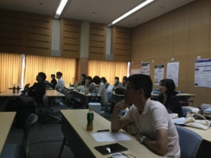 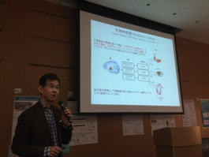 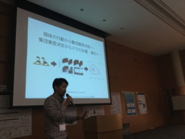 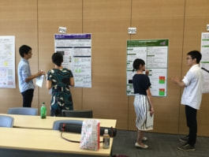 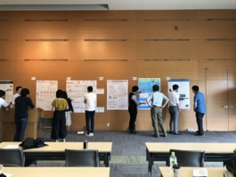 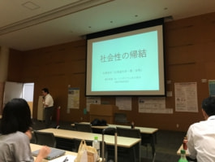 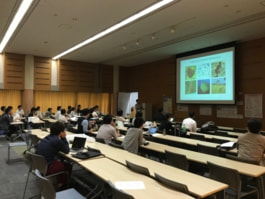
北海道大学・松島俊也教授セミナー
2017年7月3日（東京大学本郷キャンパス）
北海道大学・大学院理学研究院の松島俊也教授のセミナーが開催されました。
「動物にとって理（ことわり）とは何か？」
Mind（心）を名詞としてではなく、動詞として捕らえようと考えた。動物は何をmindしているか（気にしているか）、mindという行為にはどのような論理が一貫しているか、これに焦点を当てれば自由にそして厳格にmindを問い得るだろう、と考えたのである。その対象としてニワトリの雛（ヒヨコ）を選び、遅延報酬で強化された色弁別課題を課した。古典的な最適採餌理論を横糸とし、辺縁系における報酬表現を縦糸として、ヒヨコがmindするものを追った。現実のヒヨコは近視眼的な利潤率を妥当な通貨として選択しているかに見えたが、その選択は対応則に基づくため、明らかに長期利益率を棄損していた。リスク感受性選択は量と処理時間の二つの変数の間で一貫せず、一意に定まる利潤率を価値関数とするという仮説には疑いが生まれた。さらに、他者との競合的採餌はヒヨコの行為を著しく歪め、高い選択衝動性、過剰労働投資、見かけ上の固執や埋没費用効果など、一見不合理にバイアスされた行動を帰結した。このセミナーでは松島研に所属したかつての学生諸君の研究を紹介する。一連の不合理行動の裏にある生態的合理性の可能性を探りつつ、神経基盤の理解についても妥当な枠組みを示したい。
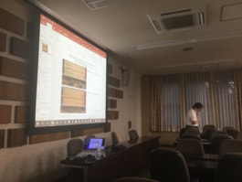 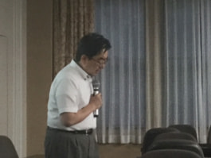
北海道大学・小倉有紀子博士セミナー
2017年1月23日（東京大学本郷キャンパス）
北海道大学の小倉有紀子博士が、「社会的促進の神経基盤：行動生態学の視点から」"Neural basis of social facilitation - from behavioral ecology”と題するセミナーを行いました。
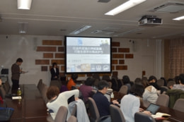 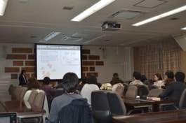
高知工科大学・岡野芳隆講師セミナー
2016年11月22日（東京大学本郷キャンパス）
高知工科大学の岡野芳隆講師（https://sites.google.com/view/okano/）が、"Team Behavior and Descriptive Power of the Minimax Hypothesis"と題するセミナーを行いました。
Abstract: We report the results of an experiment comparing team and individual behavior in a two-player zero-sum game and assess the descriptive power of the minimax hypothesis. Tests based on the choice frequencies reveal that the play of teams is largely consistent with the minimax hypothesis in the first half of the experiment, but not in the second half. On the other hand, the play of individuals is inconsistent with the minimax hypothesis in both halves. Furthermore, by using the model selection methods, we select the best model that describes the experimental data among the minimax model, experience-weighted attraction learning model, reinforcement learning model, belief-based learning model, and quantal response equilibrium. The minimax model describes the data best for about half of the decision makers for both teams and individuals. Contrast to the results based on the choice frequencies, the number of teams for which the minimax is the best model is larger in the second half than in the first half, while those numbers of individuals are similar in both halves.
オタゴ大学・Nathan Berg准教授セミナー
2016年3月4日（東京大学本郷キャンパス）
ニュージーランド・オタゴ大学経済学部のNathan Berg准教授 (https://www.otago.ac.nz/economics/staff/academic/nathan-berg) が、"Anti-fragility with respect to free riding, or free-ride robustness"と題するセミナーを行いました。
Abstract: Many economists who study public goods games and tragedies of the commons appear to regard the first-best or ideal goal of a social system as designing incentives in such a way as to prevent free riding. In contrast to that view, I consider real-world environments with multiple public goods decisions in which free-riding and near-socially-efficient contribution levels can happily co-exist. I discuss both theoretical mechanisms and empirical data suggesting that free-riding and high rates of contributions to public goods can co-exist, without spiralling to the universal zero-contribution outcome, when embedded in an environment with multiple public goods games, each with their respective contribution decisions. Following Nassim Taleb’s notion of anti-fragile and previous work by Kameda showing that not-so-tragic “tragedies of the commons” are rather widespread in the real world, I consider the prospects for designing environments in ways that nurture near-socially-efficient levels of contributions without trying to eliminate free-riding. Rather the goal, I argue, should be to achieve anti-fragility with respect to free-riding or, equivalently, “free-ride robustness.”
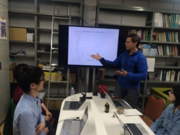 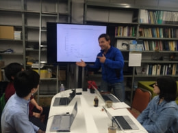
第19回実験社会科学カンファレンス
2015年11月28・29日（東京大学本郷キャンパス）
実験社会科学カンファレンスとは、実験を通じて広範な社会科学領域の連携を図る目的の会議で、今年で19回目を迎えました。今回も、実験経済学、行動経済学、社会心理学、実験政治学、数理生物学、脳科学などの研究者が集い、異分野交流的な活発な議論が行われました。（旧カンファレンスサイトは終了しています。） 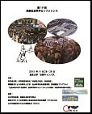
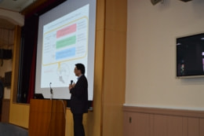 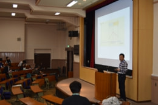 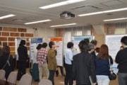 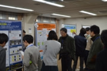 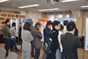 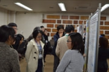 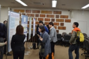
パドヴァ大学・Alessandro Angrilli教授セミナー
2015年7月24日（東京大学本郷キャンパス）
イタリア・パドヴァ大学心理学部のAlessandro Angrilli教授（https://www.unipd.it/contatti/alessandro.angrilli）が当研究室を訪問され、"Psychobiology of empathy and emotions: new approaches and tools"と題するセミナーを行いました。研究技法を中心に、若手を含む活発な意見交換が予定の時間をはるかに超え、3時間にわたり行われました。
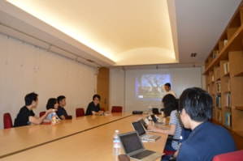 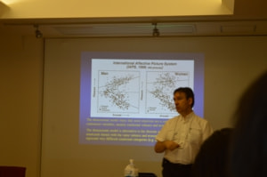 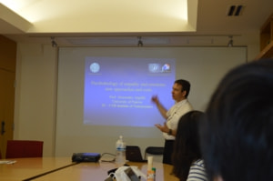
第１回神経経済学ワークショップ
2015年2月20-22日（神奈川県相模原市）
課題設定による先導的人文・社会科学研究推進事業（領域開拓プログラム）「社会価値」に関する規範的・倫理的判断のメカニズムとその認知・神経科学的基盤の解明
（亀田達也代表 H26.10 - H29.9）の支援により、国内の若手・中堅の先端研究者20名が合宿形式で、神経経済学に関わる最新の研究紹介と熱心な議論を行いました。1st_neuroeconws_program.pdf
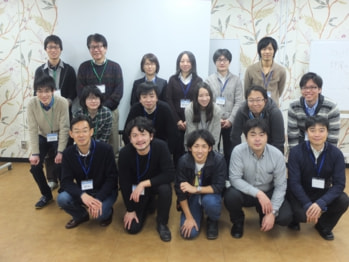 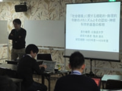 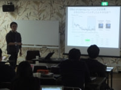 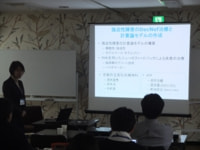 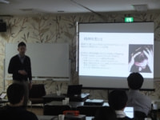 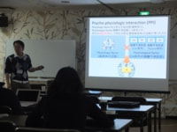 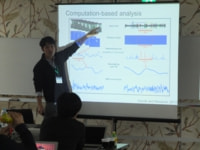 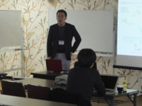 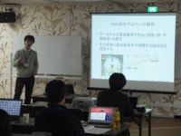 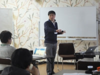 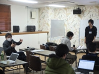 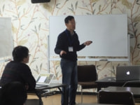 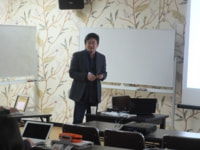